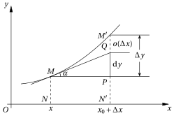

微商
设\(y=f(x)\)是定义在区间\([a, b]\)上的一个函数,如果极限 \[ \lim_{\Delta x \rightarrow 0} \frac{f(x_{0}+\Delta x)-f(x_{0})}{\Delta x} \] 存在,则说函数\(f(x)\)在\(x_0\)处可微,成为函数\(f(x)\)在\(x_0\)处的微商或者导数.
微商是差商的极限 \[ \frac{\mathrm{d} y}{\mathrm{d} x}=\lim _{\Delta x \rightarrow 0} \frac{f(x+\Delta x)-f(x)}{\Delta x}=\lim _{\Delta x \rightarrow 0} \frac{\Delta y}{\Delta x} , \] 这里需要把\(\frac{\mathrm{d} y}{\mathrm{d} x}\)看成一个整体,当赋予\(\mathrm{d}x\)和\(\mathrm{d}y\)以独立的意义时,才可以理解为\(\mathrm{d}y\)和\(\mathrm{d}y\)之商.
微分
定义 \[ \begin{align*} \mathrm{d} x&=1 \cdot \Delta x ,\\ \mathrm{d} y&=f^{\prime}(x) \Delta x \end{align*} \] 为微分,可以看出\(\mathrm{d}x\)和\(\mathrm{d}y\)是函数而非数.
定义 \[ \Delta y=f(x+\Delta x)-f(x) \] 为差分.
二者的关系如图:

\(\mathrm{d}x\)是自变量的微分,\(\mathrm{d}y\)是因变量的微分,微商就可以表示为这两个微分的商: \[ \frac{\mathrm{d} y}{\mathrm{d} x}=f^{\prime}(x). \] 微分是对差分的近似,以直代曲,也叫线性近似;从上图可以看出微分是一种线性映射.用极限而不用无穷小量定义微商,则是先有微商后有微分;如果用无穷小量定义的话,则是反过来.
微积分
微积分实际上被发明了两次——古典微积分和极限微积分.古典微积分是从几何直观角度建立微积分的概念,极限微积分是用$-$语言建立微积分的概念,摒弃了无穷小量.
古典微积分和极限微积分的对比
- 古典微积分是先定义微分再定义导数,极限微积分是先定义导数再定义微分.
- 古典微积分的导数是基于无穷小量定义的,极限微积分的导数是基于极限定义的.
- 古典微积分的微分是无穷小量,极限微积分的微分是一个线性函数.
- 古典微积分的定积分是求无穷小矩形面积的和,极限微积分的定积分是求黎曼和.
- 古典微积分的切线是可以画出来的,极限微积分的切线是算出来的.
- 古典微积分的建立过程很直观,极限微积分的建立过程更抽象.
最近读完了《微积分的历程:从牛顿到勒贝格》,真是让人叹为观止!如果能够早一点了解微积分的历程,大一的时候应该不至于学得那么辛苦,并且索然无味.
问题
- 对于链式求导法则\(\frac{\mathrm{d} y}{\mathrm{d} x}=\frac{\mathrm{d} y}{\mathrm{d} u} \cdot \frac{\mathrm{d} u}{\mathrm{d} x}\),\(\mathrm{d}u\)貌似可以消去,这是古典微积分中的理解.但在极限微积分中,两个\(\mathrm{d}u\)是不同的函数,第一个\(\mathrm{d}u=\Delta u\),第二个\(\mathrm{d}u=u'(x) \Delta x\),所以是不能消去的.
- 古典微积分中\(\left.\int_{a}^{b} \frac{\mathrm{d} y}{\mathrm{d}x} \mathrm{d} x \Longrightarrow \int_{a}^{b} \mathrm{d} y \Longrightarrow y\right|_{a} ^{b}\),\(\mathrm{d}x\)好像被消去了.而在极限微积分中,\(\int_{a}^{b} \mathrm{d} x\)是黎曼和.
从极限角度推导复合函数的导数:
若\(y\)是\(u\)的函数,\(u\)又是\(x\)的函数,即 \[ y=f(u), u=\varphi(x). \]
\[ \begin{align*} \Delta u&=\varphi(x+\Delta x)-\varphi(x),\\ \Delta y&=f(u+\Delta u)-f(u). \end{align*} \]
由于 \[ \frac{\Delta y}{\Delta x}=\frac{\Delta y}{\Delta u} \cdot \frac{\Delta u}{\Delta x}, \] 令\(\Delta x \rightarrow 0\),这时也有\(\Delta u \rightarrow 0\),于是 \[ \begin{aligned} y^{\prime} &=\lim _{\Delta x \rightarrow 0} \frac{\Delta y}{\Delta x}=\lim _{\Delta x \rightarrow 0}\left(\frac{\Delta y}{\Delta u} \cdot \frac{\Delta u}{\Delta x}\right)=\lim _{\Delta x \rightarrow 0} \frac{\Delta y}{\Delta u} \cdot \lim _{\Delta x \rightarrow 0} \frac{\Delta u}{\Delta x} \\\\ &=\lim _{\Delta u \rightarrow 0} \frac{\Delta y}{\Delta u} \cdot \lim _{\Delta x \rightarrow 0} \frac{\Delta u}{\Delta x}=\frac{\mathrm{d} y}{\mathrm{d} u} \cdot \frac{\mathrm{d} u}{\mathrm{d} x}=f^{\prime}(u) \varphi^{\prime}(x) \end{aligned} \]
参考资料
- 龚昇.简明微积分(第四版).北京:高等教育出版社.2005.
- 马同学的数学.微分是什么?
- 马同学的数学.\(\mathrm{d}x,\mathrm{d}y\)是什么?
- 马同学的数学.微分和导数的关系是什么?两者的几何意义有什么不同?为什么要定义微分?